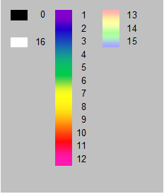

Color Sensor (45-2018)
The Color Sensor is used to detect the color of an object or a visible light source. Along with raw and adjusted RGB values, the device can also return a color number corresponding to a the colors listed below in the documentation. Calibration steps must be taken as needed based on the environment and ambient lighting for the most accurate readings. Maximum detection distance of the color sensor is approximately 7cm and it is recommended that during active mode the device is placed at a slight angle to avoid white light reflecting from the LED.
- Connect via I2C port.
List of available blocks:

Set Mode
Set the reading mode and frequency. Values are saved within the sensor memory, therefore this block only needs to be called when the mode needs to be changed.
- Mode:
- Active (Default)
- Passive
- Frequency:
- 60 Hz (Default)
- 50 Hz
Block:
Code Produced:
Setup:
colour = Fusion.color(f)Code:
colour.colorSetup(colour.ACTIVE, colour.SIXTY_HZ)

Get Color Number
Returns a value representing a color based on the color chart below.

Block:
Code Produced:
Setup:
colour = Fusion.color(f)Code:
colour.getColorNumber()Example:
Code:
import Fusion f = Fusion.driver() my_color = None colour = Fusion.color(f) my_color = colour.getColorNumber()


Get RGB
Returns the Red, Green or Blue reading from the current object in front of the sensor.
- Can read the Red, Green or Blue value.
- The returned ranges from 0 to 255.
Block:
Code Produced:
Setup:
colour = Fusion.color(f)Code:
colour.getRGBIndex()[0]Example:
Code:
import Fusion f = Fusion.driver() my_red = None my_green = None my_blue = None colour = Fusion.color(f) my_red = colour.getRGBIndex()[0] my_green = colour.getRGBIndex()[1] my_blue = colour.getRGBIndex()[2]
Calibrate Black Balance
Adjusts the sensor to recognize complete absence of light or color as black, setting a baseline for color detection in low-light conditions.
Block:
Code Produced:
Setup:
colour = Fusion.color(f)Code:
colour.blackBalance()
Calibrate White Balance
Sets the sensor to accurately identify white by exposing it to a white surface or bright light, ensuring correct interpretation of all colors against this reference.
Block:
Code Produced:
Setup:
colour = Fusion.color(f)Code:
colour.whiteBalance()
Questions?
Contact Boxlight Robotics at support@BoxlightRobotics.com with a detailed description of the steps you have taken and observations you have made.
Email Subject: MyBot Blockly Color Sensor